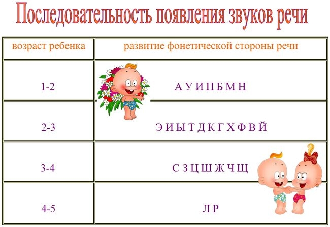

Кондратенко Светлана Петровна
Учитель – логопед
Специалист высшей категории
Для вас, родители!
Когда и в каких случаях нужно обращаться к логопеду?
- Если ребенок к 4-5-ти годам не произносит или искажает один из звуков: Р Л С З Ц Ш Ж Ч Щ (например, произносит «_ыба» вместо «рыба» или «фапка» вместо «шапка»)
- Если 5-6-ти летний ребенок заменяет одни звуки другими или смешивает их (например, произносит «шолнышко» вместо «солнышко»; «барелина» вместо «балерина»)
- Если 4-х летний ребенок не правильно употребляет в речи предлоги, падежные окончания, испытывает трудности в образовании форм множественного числа (например: «Листья падают из деревий». «Я чищу зубы щетком». « Это ухи и глазы».)
- Если ребенок к 5 годам испытывает трудности в определении и назывании первого, последнего звуков в словах; затрудняется повторить вслед за взрослым ряд похожих по звучанию слов, например: точка-дочка-точка, игра-игла-игла, кот-год-ход
- Если 5-ти летний ребенок путает временные и пространственные понятия «вчера-сегодня-завтра», «слева-справа-впереди-сзади»; испытывает трудности сосредоточения, рассеян. Подолгу и с трудом расстегивает или застегивает пуговицы; неуверенно держит карандаш, когда рисует.
- Если ребенок в 4 года не может составить рассказ по картинке, пересказать знакомую сказку или выучить стихотворение.
- Если 5-ти летний ребенок испытывает трудности при произнесении таких слов, как «милиционер», «велосипед», «карандаши», «электричка».
- Если у ребенка 4-5 лет речь носит смазанный или нечеткий характер; наблюдается усиленное слюноотделение, а при произнесении некоторых звуков кончик языка высовывается между зубами. А также, если взрослые отмечают запинки в речи ребенка.
Помните, что своевременное обращение к логопеду поможет Вашему ребенку избежать многих трудностей не только в школе, но и в дальнейшей жизни!

Уважаемые родители!
Если Вашему ребёнку рекомендованы индивидуальные и подгрупповые занятия с логопедом, предлагаю воспользоваться советами специалистов.Речь ребёнка не возникает сама собой. Она развивается постепенно, иногда со значительными затруднениями, только благодаря усилиям взрослых. С момента рождения до поступления в школу ребёнку предстоит научиться правильно произносить все звуки, накопить многотысячный запас слов, усвоить грамматический строй речи, овладеть связной речью.
Исправление звукопроизношения проводится поэтапно:
1-й этап — подготовительный (формирование интереса к логопедическим занятиям; развитие слухового внимания, памяти, фонематического восприятия с помощью игр и специальных упражнений; формирование и развитие артикуляционной моторики — это выполнение артикуляционной гимнастики и специальных упражнений для губ, языка, голоса, дыхания и др.) (протекает у многих детей медленно и требует длительной тренировки).
2-й этап — постановка звуков (вызывание звуков по подражанию или при помощи специальных приемов). Последовательность постановки звуков: свистящие [с], [з], [ц], [с'], [з']; шипящие [ш]; сонорные [л]; шипящие [ж]; сонорные [р], [р']; шипящие [ч], [щ].
3-й этап— автоматизация - закрепление звука в слогах, в словах, предложениях (протекает у многих детей медленно и требует длительной тренировки)
4-й этап — дифференциация поставленных и автоматизированных звуков (в случаях замены одного звука другим).
5-й этап — автоматизация звуков в самостоятельной (спонтанной) речи - в монологах, диалогах, играх, развлечениях, на прогулках и других формах детской жизнедеятельности.
Чтобы добиться правильного положения губ, языка, быстрого и свободного, четкого произношения звука в речи, нужно много упражняться. Тренируйтесь, пожалуйста, дома! Если звук еще не произносится, выполняйте артикуляционную гимнастику. Если звук уже поставлен — закрепляйте его: выучите с ребенком речевой материал, записанный в консультационной тетради, следите за звуками в повседневной речи.
Родителям, имеющим дефекты произношения, полезно заниматься вместе с ребенком.
Знайте, что плохую речь нельзя исправить за одно или даже за два занятия. Для этого потребуется время и совместные усилия логопеда, ребенка и его родителей.
Запаситесь терпением, не ждите быстрых результатов и обязательно доведите курс коррекции произношения у ребенка до конца. Верьте в силы своего ребенка, верой и терпением вселите в него уверенность в исправление нарушения речи. Помните, что по мере взросления привычка говорить неправильно у ребенка закрепляется и хуже поддается коррекции.
Не бойтесь экспериментировать! Игры можно придумывать самим. Все зависит от вашей фантазии. Можно адаптировать (упрощать) сложные игры, если ребенок не воспринимает их в том виде, в каком они будут предложены вам. Не откладывайте на завтра то, что можно сделать сегодня! Терпения вам и успехов!
В случае возникновения необходимости получения срочной консультационной помощи, Я всегда с вами!
Желаю успехов в обучении вашего ребенка правильной речи!
Надеюсь на плодотворное сотрудничество, понимание и взаимоуважение!
Воспитание правильного звукопроизношения у детей дошкольного возраста – одна из главных задач в системе работы логопеда. Использование наглядности в детском саду занимает одно из ведущих мест среди педагогических методов воздействия.
Осуществляя работу по коррекции звукопроизношения, логопеды сталкиваются с проблемой детского заниженного интереса к появлению самого звука. Поэтому возникла потребность в разработке мотивационной наглядной модели состояния звукопроизношения детей.
Одной из удачных форм получилось «Говорящее сердце», на котором размещены фото детей с проблемными звуками. В День рождения звука, ребёнок сам отрывает букву, обозначающую данный звук и складывает её в конверт.
Наше любимое «Говорящее сердце»
{kind=link}
День рождения звука Ц у Кристины.
{kind=link}
Успешность совместной деятельности учителя-логопеда и семьи ребенка с недостатками речи определяет эффективность коррекционного воздействия. Ни одна педагогическая система не может быть в полной мере эффективной, если в ней не задействована семья.
«Учимся у тех, кого любим»- это выражение как нельзя точно объясняет роль родителей в коррекционном процессе.
Вовлечение родителей в воспитательно-образовательный процесс, их заинтересованное участие в коррекционно–педагогической деятельности важно не потому, что этого хочет учитель-логопед, а потому, что это необходимо для развития их собственного ребенка.
Звонок брату – Кирюше
{kind=link}
Мама и старший брат Кирилл помогают Даше найти «ГРИБОК»
{kind=link}
Много усилий приходится приложить всем педагогам, работающим с детьми – логопатами, чтобы научить их играть в сюжетно ролевые игры.
Сюжетно ролевая игра — наиболее доступный ребенку вид деятельности, своеобразный способ переработки полученных впечатлений, она имеют большое образовательное значение, тесно связана с обучением на занятиях, с наблюдениями повседневной жизни.
Дети учатся самостоятельно решать игровые задачи, и выбирать средства для реализации своих замыслов, находить лучший способ осуществления задуманного, пользоваться своими знаниями, выражать их словом.
{kind=link}
Сюжетно – ролевая игра «ШКОЛА»
Цель: расширение представлений о школеЗадачи:
- формировать умение творчески развивать сюжет игры путем придумывания сюжета игры
- косвенно влиять на изменение игровой среды, вести коррекцию игровых отношений на равноправном партнерстве
- формирование ролевого взаимодействия с введением новых ролей: учительница учительница соседнего класса, директор - учитель, ученики - ученики и др.
{kind=link}
{kind=link}
{kind=link}
{kind=link}
{kind=link}
{kind=link}
{kind=link}